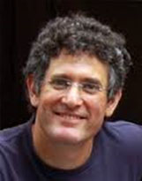

With the rapid development of acquisition techniques and machine learning methods, data-driven visual computing has been receiving more and more attention in recent years. The main task of data-driven visual computing is aggregating information a large collection of images or models, learning semantic information from the collection and utilizing learned knowledge to support higher level tasks of understanding, processing, and even novel data generation. The generated or processed data, typically possessing semantic information, can be used to enrich the input data sets and enhance the learning tasks in future, forming a data-driven visual computing loop which can boost the emergence of "big visual data". In this course, we will talk about some recent developments of data-driven visual computing, from both graphics and vision community. Specifically, we will introduce the recent advances on image-driven smart image processing and manipulation, data-driven 3D shape analysis and modeling. We will also cover joint analysis and processing of 2D and 3D data.
News:
| Dec. 15, 2014: | All course slides are available for download now! |
| Dec. 05, 2014: | Our course was sucessfully held at SIGGRAPH Asia 2014 in Shenzhen! Thank all the audiences for attention. The slides will be made available soon. Please check out this webpage for update. |
| Nov. 19, 2014: | Course syllabus (talk schedule and abstracts) has been updated. |
| Nov. 2, 2014: | Course website published. We will share more related information and resources on this website. |
Time:
Thursday, 04 December 14:15 - 18:00
Location:
Rose Hall 2, Shenzhen Convention & Exibition Center
Course syllabus:
Time |
Topic (click on title to view abstract) |
Instructor |
2:15~2:45 pm |
Course Introduction Data-driven Shape Processing and Modeling
Data-driven methods play an increasingly important role in discovering geometric,
structural, and semantic relationships between 3D shapes in collections, and
applying
this analysis to support intelligent modeling, editing, and visualization of
geometric data.
In contrast to traditional approaches, a key feature of data-driven
approaches is that they
aggregate information from a collection of shapes to improve
the analysis and processing of individual shapes.
In addition, they are able to learn
models that reason about properties and relationships of shapes without relying on
hard-coded rules or explicitly programmed instructions. We provide an overview of the
main concepts and components of these techniques, and discuss their application to
shape retrieval, segmentation, matching, reconstruction, modeling and exploration,
as well as scene analysis and synthesis, through reviewing the literature.
|
Kai Xu |
2:45~3:20 pm |
Hierarchies and Sets
3D object repositories are becoming larger by using scanners and 3D cameras.
Therefore it seems that 3D data is easily available. However, the representation
of these models is very limited with no real understanding of structure, and the
organization of data is lacking, making it difficult to search and explore.
Still, looking at sets of objects instead of individual ones can assist in
analysis and organization. I will show some examples of how sets are utilized
to define context and assist better segmentation of object into parts, build
consistent hierarchies of parts, define similarity and create object arrangements.
|
Ariel Shamir |
3:20~3:55 pm |
Data-Driven Design
Good design is hard. Traditional computer-aided design interfaces require the design goal to be reached through careful planning and execution of a series of low-level drawing and editing commands -- which requires previsualization, dexterity and time. Recent work has focused on interfaces that bridge the gap between how a person thinks about what he wants to create, and how she can interact with a computer to get there. Such interfaces are based on high-level models of design structure, semantics, intent and function. These models are often difficult to write down by hand. Instead, they can be profitably learned from, or built upon, large collections of exemplar designs. I will discuss interfaces that exploit this analysis, and potential benefits for both artistic and engineering applications.
|
Siddhartha Chaudhuri |
3:55~4:05 pm |
Break |
|
4:05~4:40 pm |
Functional Maps and Shape/Image Networks
This talk focuses on how collections of 3D shapes or collections of images (or of both) can be analyzed by using networks of maps between the data sets. We introduce mathematical and computational tools for making such relationships or correspondences between data sets first-class citizens -- so that the relationships themselves become explicit, algebraic, storable and searchable objects. Networks of such relations can interconnect geometric data sets into societies where the “wisdom of the collection” can be exploited in performing operations on individual data sets better, or in further assessing relationships between them. Examples include entity extraction from images or videos, 3D segmentation, the propagation of annotations and labels among images/videos/3D models, variability analysis in a collection of shapes, etc. By creating societies of data sets and their associations in a globally consistent way, we enable a certain joint understanding of the data that provides the powers of abstraction, analogy, compression, error correction, and summarization. In the end, we show how useful semantic structures simply emerge from these map networks, with little or no supervision.
|
Leonidas Guibas |
4:40~5:15 pm |
Library-driven Image Editing and synthesis
With the rapid progress of internet technology, massive visual media data has been emerging on the internet, which brings a big opportunity to the new evolution of information technology, as well as the industry development. Given the massive visual media data, how to find the inherent patterns, systematical management, efficient processing and utilization is a great challenge. Visual media itself has the properties of large file size,
no inherent structures, high dimension and rich semantics. In this talk, I will show how to process visual media via internet data, include structure analysis, search, systhesis and composition of visual media.
|
Shi-Min Hu |
5:15~5:50 pm |
What Makes Big Visual Data Hard?
We are living in an age of big visual data. An estimated 3.5 trillion photographs have been taken since the invention of photography, of which 10% within the past 12 months. Facebook alone reports 9 billion photo uploads per month; YouTube sees 72 hours of video uploaded every minute. In fact, there is so much visual data out there already that much of it might never be seen by a human being! But unlike other types of "Big Data", such as text or consumer records, much of the visual content cannot be easily indexed, searched or hyperlinked, making it Internet's "digital dark matter" [Perona, 2010].
In this talk, we will first discuss some of the unique challenges that make Big Visual Data difficult compared to other types of content. In particular, we will argue that the central problem is the lack a good measure of similarity for visual data. We will then present some of our group’s recent work that aims to address this challenge in the context of visual matching, image retrieval and visual data mining. As an application of the latter, we proposed an interactive framework that allows a user to rapidly explore and visualize a large photo collection, to answer the question "What's in the Big Visual Data?". |
Alexei Efros & Jun-Yan Zhu |
5:50~6:00 pm |
Open Challenges |
All (presented by Ariel Shamir) |
Instructor Bios:
Leonidas Guibas, Stanford University Leonidas Guibas obtained his Ph.D. from Stanford in 1976, under the supervision of Donald Knuth. His main subsequent employers were Xerox PARC, MIT, and DEC/SRC. He has been at Stanford since 1984 as Professor of Computer Science. He has produced several Ph.D. students who are well-known in computational geometry, such as John Hershberger, Jack Snoeyink, and Jorge Stolfi, or in computer graphics, such as David Salesin, Eric Veach, or Niloy Mitra. At Stanford he has developed new courses in algorithms and data structures, geometric modeling, geometric algorithms, and sensor networks. Professor Guibas is an ACM and IEEE Fellow as well as a winner of the ACM/AAAI Allen Newell award. |
|
Alexei Efros, UC Berkeley Alexei (Alyosha) Efros joined UC Berkeley in 2013 as associate professor of Electrical Engineering and Computer Science. Prior to that, he was nine years on the faculty of Carnegie Mellon University, and has also been affiliated with École Normale Supérieure/INRIA and University of Oxford. His research is in the area of computer vision and computer graphics, especially at the intersection of the two. He is particularly interested in using data-driven techniques to tackle problems which are very hard to model parametrically but where large quantities of data are readily available. Alyosha received his PhD in 2003 from UC Berkeley. He is a recipient of CVPR Best Paper Award (2006), NSF CAREER award (2006), Sloan Fellowship (2008), Guggenheim Fellowship (2008), Okawa Grant (2008), Finmeccanica Career Development Chair (2010), SIGGRAPH Significant New Researcher Award (2010), ECCV Best Paper Honorable Mention (2010), and the Helmholtz Test-of-Time Prize (2013). |
|
Shi-Min Hu, Tsinghua University Shi-Min Hu is currently a professor in the Department of Computer Science and Technology, Tsinghua University, Beijing. He received Bachelor degree in Computational mathematics from Jilin University in 1990, the Master and PhD degree in Computational Geometry and Graphics from Zhejiang University in 1993 and 1996 respectively. His research interests include digital geometry processing, video processing, rendering, computer animation, and computer-aided geometric design, and he has published more than 100 papers in journals and peer-reviewed conferences, and hold over 30 patents. He currently serves as Associate Editor-in-Chief of The Visual Computer (Springer) and on the editorial board of IEEE Transactions on Visualization and Computer Graphics, Computer Aided Design (Elsevier), and Computer & Graphics (Elsevier). He has served as program chairs for various prestigious conferences, including Pacific Graphics, Geometric Modeling and Processing and Eurographics Symposium on Geometry Processing. |
|
|  | Ariel Shamir, The Interdisciplinary Center Ariel Shamir is a Professor at the school of Computer Science at the Interdisciplinary Center in Israel, where he is currently the vice-dean. Prof. Shamir received his Ph.D. in computer science in 2000 from the Hebrew University in Jerusalem. He spent two years at the center for computational visualization at the University of Texas in Austin. He was a visiting scientist at Mitsubishi Electric Research Labs in Cambridge MA (2006), Disney Research Boston, and MIT (2013). Prof. Shamir has numerous publications in journals and international refereed conferences, and a broad commercial experience working with, and consulting numerous companies including Mitsubishi Electric, Disney, PrimeSense (now Apple) and more. He is an associate editor for Computer Graphics Forum and Computers and Graphics journals. Prof. Shamir specializes in geometric modeling, computer graphics and machine learning. |
Kai Xu, Natl. Univ. of Def. Tech. and Shenzhen Inst. of Adv. Tech. Kai Xu received his PhD in Computer Science at National University of Defense Technology (NUDT). He is currently a postdoctoral researcher at Shenzhen Institutes of Advanced Technology (SIAT) and also holds a faculty position at NUDT. During 2009 and 2010, he visited Simon Fraser University, supported by the Chinese government. His research interests include geometry processing and geometric modeling, especially topics involving large collections of 3D shapes and machine learning techniques. He serves as an associate editor for the Computers & Graphics journal (Elsevier). He has served on program committees for SGP, PG and GMP. |
|
Siddhartha Chaudhuri, Cornell University Siddhartha Chaudhuri is a lecturer at Cornell University. He obtained his PhD from Stanford University in 2011, where he was supported by a Stanford Graduate Fellowship, and then conducted postdoctoral research at Princeton University. His research focuses on richer tools for visual content creation, particularly for novice and casual users, and on problems in 3D reconstruction and synthesis. This research is driven by a more abstract interest in shape understanding at both the structural and semantic levels. In the past, he has also worked on theoretical computational geometry and very large-scale real-time rendering systems. His work has been published at the top computer graphics and human-computer interaction conferences, and is also the basis for a commercial 3D modeling system. |
|
Jun-Yan Zhu, UC Berkeley Jun-Yan Zhu received a BE degree with honors in computer science and technology from Tsinghua University in 2012. He is currently a PhD student at UC Berkeley in the Computer Science Division. His research interests include computer graphics, computer vision and computational photography. In particular, he is interested in summarizing, mining and exploring large-scale visual data collections, with the goal of building a digital bridge between humans and huge amounts of unorganized images and videos. |
Course organized by Kai Xu
Please send any suggestion/feedback to kevin.kai.xu [at] gmail.com